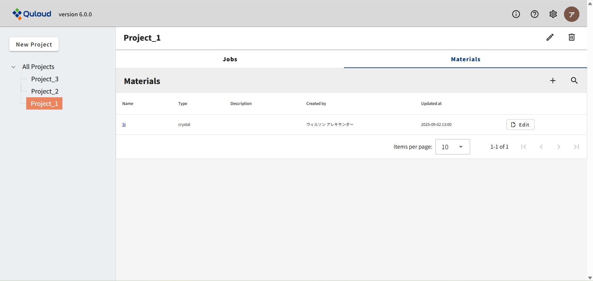
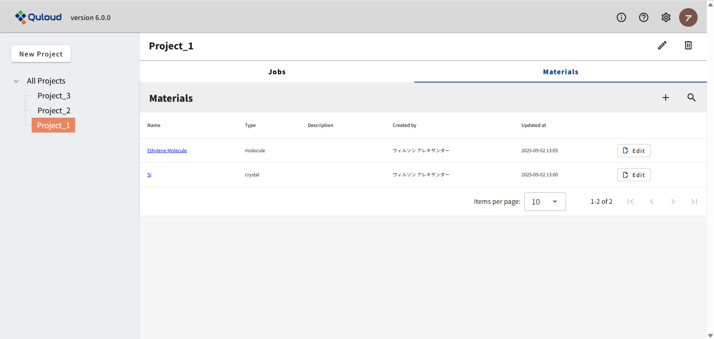

4. ダッシュボード（トップ画面）
下図は Quloud のログイン直後の画面です。これから計算を始めていくにあたって重要な要素として、 Project，Material，Job があります。

4.1. Project
Quloud では、材料のモデリングやシミュレーションは Project の中で行われます。そしてそれぞれの Project の中に、Material や Job が配置されます。 Material はモデリングを行うための要素、Job はシミュレーションを行うための要素です。
4.1.1. Project の作成・共有
画面左上にある「New Project」をクリックすると、下図のようなメニューが開きます。

管理ユーザー（Owner）の場合、作成した Project を Tenant 内のメンバーと共有することができます。 「Name」に新しい Project の名前（ここでは "Project_1"）を入力し、Project を共有するメンバー（ここでは "Planck Nicolas"）にチェックを入れます。

「Submit」をクリックすると、トップ画面左の Project 一覧に Project_1 が追加されていることが分かります。

Project を共有した Planck Nicolas のアカウントからサインインすると、先ほど作成した Project_1 がここでも表示されています。

Project が増えると、画面左上の「All Projects」をクリックしたとき、例えば下図のように Project の一覧が表示されるので、 使用したい Project をクリックすれば、その Project に切り替わるようになっています。 Project を切り替えると、画面上部に選択中の Project の名前（ここでは "Project_1"）が表示されます。 このとき、Material や Job は、 その Project に登録されているものだけが表示されるようになるので、データの整理等に利用できます。
Project の重要な機能として、例えば Project 内の Material から Job を作ると、 その Job も自動的に Project のメンバーとして登録されるというものがあります。 （ただし元になった Material が複数の Project に属していたとしても、そこから派生した Job は、 現在選択中の Project にのみ、自動的に登録されます。）
4.1.2. Project の削除
まず、Project を削除すると、配下にある Material や Job もすべて削除されてしまいますのでご注意ください。
トップ画面左の Project 一覧で、削除する Project（ここでは "Project_1"）をクリックします。

画面右上にゴミ箱のマークが現れるので、それをクリックすると、次のようなダイアログが出ます。

警告メッセージを読み、削除に問題がなければチェックを入れます。すると、「Submit」ボタンがアクティブになります。

「Submit」ボタンを押すと、トップ画面から Project_1 が消えます。
4.2. Material
Project の名前の下にある「Materials」と「Jobs」のうち、左の「Materials」をクリックし、 右側の「＋」のアイコンをクリックすると、次のようなメニューが開きます。

ここでは計算したい物質の原子座標ファイルを登録します。 「Atomic Structures」のメニュー内には３つのボタンがあり、それぞれ
結晶構造データベース（Materials Project）で検索＆取得
分子構造データベース（PubChem）で検索＆取得
手持ちのファイルをアップロードする
という登録方法に対応しています。データベース検索の方法等については後述することにして、 とにかく原子座標ファイルが登録できたら、下記のように、 最初の画面の「Materials」の欄に登録した情報が追加されます。
登録した Material をクリックすると、 次のような、その Material の詳細画面に移動することができます。

この画面から、Material のモデリングを行ったり、各種計算を行ったりすることができます。 Quloud では、モデリングの結果も「Material」というデータとして登録されます。 また、計算結果は「Job」というデータとして登録されます。
具体的なモデリングの方法については後述することにして、ここでは例として、 Si のコンベンショナルセル（立方体セル）にするモデリングを実行したとします。 すると、以下のように、最初の画面の「Materials」の欄にデータが追加されるのがわかります。

4.3. Job
Project の名前の下にある「Materials」と「Jobs」のうち、右の「Jobs」をクリックすると、 次のような画面になります。

Material 詳細画面から Job を作成すると、そのデータが追加されます。
具体的な計算設定の方法については後述することにして、ここでは例として、 Si のバンド計算の Job を作成したとします。 すると、以下のように、最初の画面の「Jobs」の欄にデータが追加されるのがわかります。